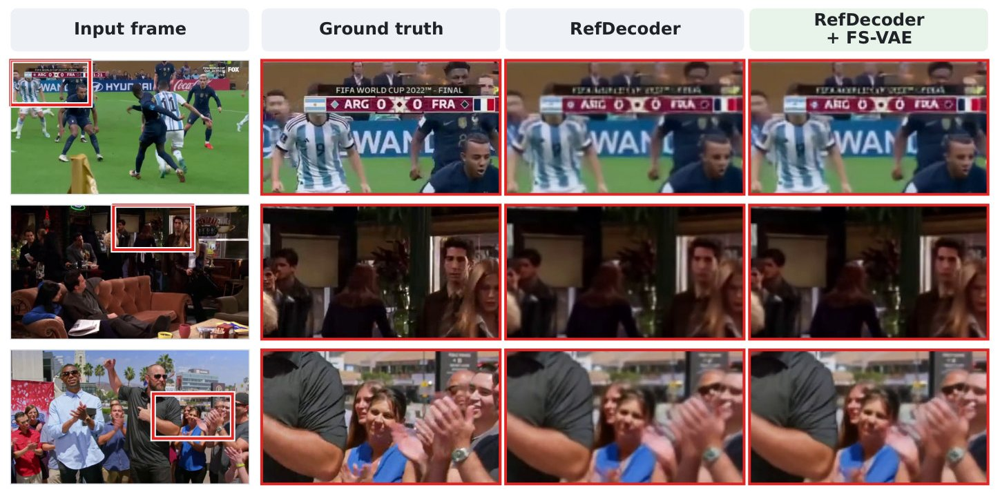

Three raters compared 50 image pairs side by side in randomized order, choosing the image with more realistic fine detail. FS-VAE was preferred in 77% of all comparisons: 88% on LAION-Face and 67% on TokBench.

Latent diffusion models (LDM) rely on VAEs to compress visual inputs for computational efficiency, which is particularly consequential for very high resolution visual inputs. Through an in-depth interpretability analysis, we show that this compression disproportionately degrades high-frequency information at lower spatial resolutions, discarding fine details such as facial features or text patterns.
Building on this insight, we propose a cross-resolution finetuning framework we call FS-VAE that uses a higher-resolution VAE as a teacher to supervise its lower-resolution counterpart, recovering lost frequency information via a band-wise steerable-pyramid objective. FS-VAE enables richer reconstruction from low-resolution latents without expanding channel dimensions, reference encoders, external models, or retraining downstream diffusion architectures.
Furthermore, we analyze the impact of distinct loss objectives on reconstruction quality and demonstrate our approach's generalizability across diverse image and video VAEs. By preserving the original architecture and latent dimensionality, FS-VAE acts as an efficient, plug-and-play replacement for existing LDM pipelines.
Drag the slider: ground truth on the left, the selected decoder's 256² reconstruction on the right.
Example
Decoder · F-Sim ↑
Full 256² input. The marked face is what the decoder must rebuild.
We decompose images with a complex steerable pyramid into a high-pass residual H, five octave-spaced levels L0–L4 (128, 64, 32, 16 and 8 cycles per image, four orientations each) and a low-pass residual Lo. Since the transform is invertible, we can swap a single band from the 512² teacher reconstruction (or the ground truth) into the 256² student reconstruction and measure how much face identity (F-Sim) returns, analogous to activation patching.

Band swap test. Swapping only the L1 band from the teacher into the student raises F-Sim from 0.206 to 0.635.

Average F-Sim gain per swapped band on 1,000 TokBench faces. 4-channel VAEs lose identity mainly in L1–L2; 16-channel VAEs in L0–L1, with smaller gaps overall.
Takeaways

Overview of FS-VAE. A frozen teacher reconstructs the 512² image. The student encodes the same image at 256² with the same frozen encoder; only its decoder is trained. The steerable-pyramid loss penalizes differences between their band magnitudes.
For each subband k we take magnitude maps ak = |Pk(ŷ)| of the teacher and the (bicubically upsampled) student, and compute a relative error normalized by the teacher's energy in that band, so low-frequency bands with large coefficients do not dominate the gradient:
\[ r_k = \frac{\langle |a^T_k - a^S_k| \rangle}{\langle a^T_k \rangle + \varepsilon}, \qquad \mathcal{L}_{\text{dist}} = \frac{\sum_k \omega_k r_k}{\sum_k \omega_k} \]
\[ \mathcal{L} = \lambda_{\text{rec}}\mathcal{L}_{\ell_1} + \lambda_{\text{lp}}\mathcal{L}_{\text{LPIPS}} + \lambda_{\text{dist}}\mathcal{L}_{\text{dist}} \]
Freezing the encoder keeps the latent space fixed, so any diffusion model trained on it can use the new decoder directly.

Matching per-band energy constrains how much energy each band carries, but not where in the band it goes. In 4-channel VAEs this shows up as a faint periodic grain and bright spots in the residual power spectrum. A brief post-tune with ℓ1, LPIPS and a PatchGAN loss removes them. 16-channel video VAEs do not show the artifact and use Stage 1 only.
| Face size (relative scale s) | s < 0.1 | 0.1–0.2 | 0.2–0.3 | s > 0.3 |
|---|---|---|---|---|
| Instances | 3,196 | 6,429 | 1,579 | 1,513 |
| SD-VAE ft-MSE | 0.2090 | 0.2368 | 0.4054 | 0.7204 |
| FS-VAE, stage 1 | 0.2271 +8.7% | 0.2610 +10.2% | 0.4258 +5.0% | 0.7318 +1.6% |
| Tokenizer | PSNR ↑ | SSIM ↑ | LPIPS ↓ | rFID ↓ | rFVD ↓ | F-Sim ↑ |
|---|---|---|---|---|---|---|
| Image VAEs · 4-channel latent | ||||||
| SD-VAE-ft-MSE | 26.15 | 0.7703 | 0.1536 | 7.86 | – | 0.4542 |
| + finetune (ℓ1 + LPIPS + GAN) | 25.86 | 0.7672 | 0.1515 | 7.38 | – | 0.4595 |
| + FS-VAE, stage 1 | 26.36 | 0.7804 | 0.1525 | 9.04 | – | 0.4729 |
| + FS-VAE, stage 1+2 | 26.15 | 0.7760 | 0.1503 | 7.76 | – | 0.4667 |
| SDXL-VAE | 26.53 | 0.7904 | 0.1471 | 7.10 | – | 0.5011 |
| + FS-VAE, stage 1 | 26.78 | 0.7981 | 0.1467 | 8.37 | – | 0.5116 |
| + FS-VAE, stage 1+2 | 26.76 | 0.7974 | 0.1456 | 7.58 | – | 0.5106 |
| Video VAEs · 16-channel latent | ||||||
| Wan 2.1 VAE | 30.55 | 0.9056 | 0.1169 | 9.13 | 8.30 | 0.5215 |
| + FS-VAE, stage 1 | 30.61 | 0.9050 | 0.1168 | 9.54 | 8.80 | 0.5219 |
| RefDecoder | 30.53 | 0.9062 | 0.1203 | 10.37 | 10.68 | 0.5533 |
| + finetune (ℓ1 + LPIPS) | 30.99 | 0.9108 | 0.1151 | 9.70 | 9.65 | 0.5644 |
| + FS-VAE, stage 1 | 31.13 | 0.9130 | 0.1121 | 9.11 | 8.11 | 0.5684 |
Bold: best within each decoder block. See the paper for the full comparison with DC-AE, VA-VAE, FLUX, SD3.5, Cosmos, CogVideoX and others.
Three raters compared 50 image pairs side by side in randomized order, choosing the image with more realistic fine detail. FS-VAE was preferred in 77% of all comparisons: 88% on LAION-Face and 67% on TokBench.

Same latents, different decoder. DiT-XL/2 samples (250 DDPM steps, CFG 1.5, fixed seed) decoded with SD-VAE ft-MSE (top) and FS-VAE (bottom). Since the encoder is frozen, any improvement comes from the decoder alone.

Video results on TokBench with FS-VAE applied to RefDecoder on Wan 2.1 latents. rFVD improves from 9.65 to 8.11 over RefDecoder finetuned on the same data without the pyramid term.
@inproceedings{fsvae2027,
title = {Frequency-Steered {VAE}s: Restoring Fine Details in Low-Resolution Latents},
author = {Anonymous},
booktitle = {Under review at the International Conference on Learning Representations (ICLR)},
year = {2027}
}